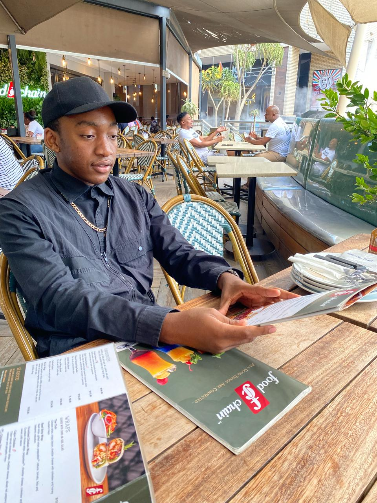
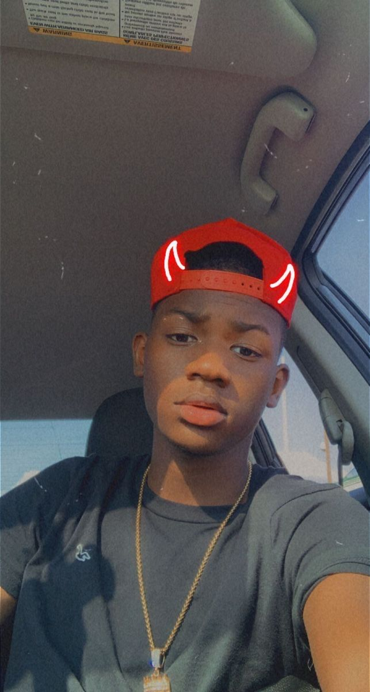

Darryl, 29 – Software Developer, Johannesburg

Bio:
I'm a calm, thoughtful guy who enjoys deep conversations over coffee and late-night coding sessions. 4 During weekends, you'll find me hiking in the Magaliesberg or binge-watching sci-fi shows. Looking for someone kind, funny, and open-minded to explore life and good food with.
Interests
Tech, indie music, hiking, Marvel movies, sushi
Looking for:
A meaningful connection and shared adventures
Sipho, 34 – Fitness Trainer, Durban
Bio:
Energetic, ambitious, and always up for a challenge—whether it's a morning beach run or cooking a new meal. I believe in healthy living, good vibes, and keeping it real. I’m here to meet someone fun, confident, and driven—bonus points if you love dogs!
Interests
Gym, cooking, beach walks, live music, motivational podcasts
Looking for:
A strong woman with a kind heart and a love for fitness
Thabo, 26 – Photographer & Creative, Cape Town

Bio:
A free spirit with a camera and a love for storytelling. I live for golden-hour light, deep laughter, and spontaneous road trips. If you're into art galleries, deep convos, and street food, we’ll probably get along just fine.
Interests
Photography, poetry, vintage fashion, travel
Looking for:
Someone creative, curious, and unafraid to be themselves
Mpho, 31 – High School Teacher, Polokwane
Bio:
Down-to-earth and big on family values. I teach history by day and read novels or watch documentaries by night. I enjoy meaningful chats, Sunday braais, and helping the people around me grow. I’m here to find someone genuine, warm, and ready to build something real.
Interests
Reading, football, teaching, jazz music, community work
Looking for:
A sincere, intelligent woman who values loyalty and connection